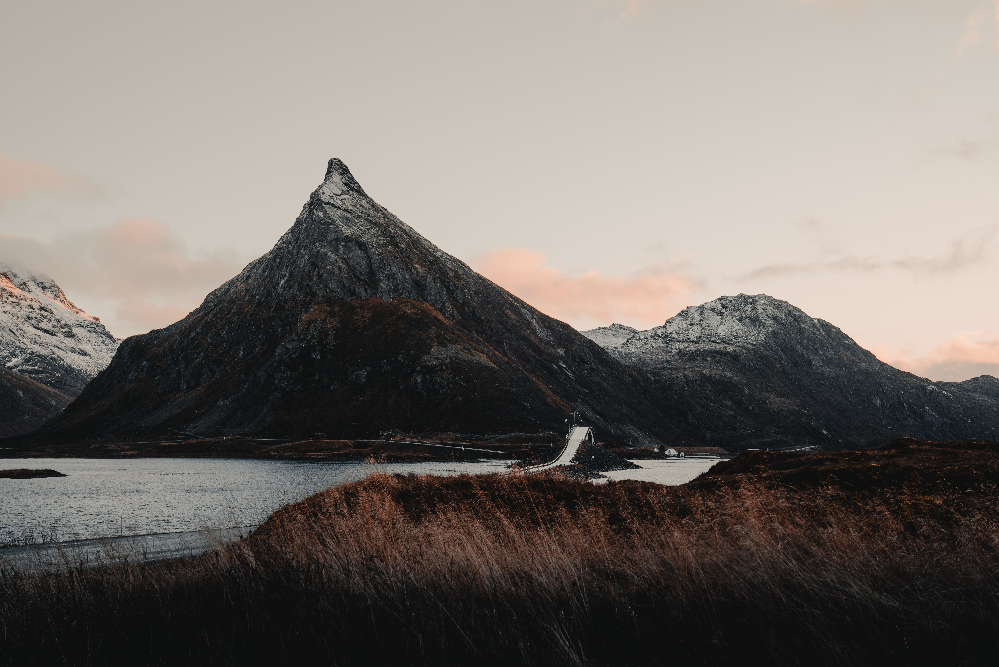
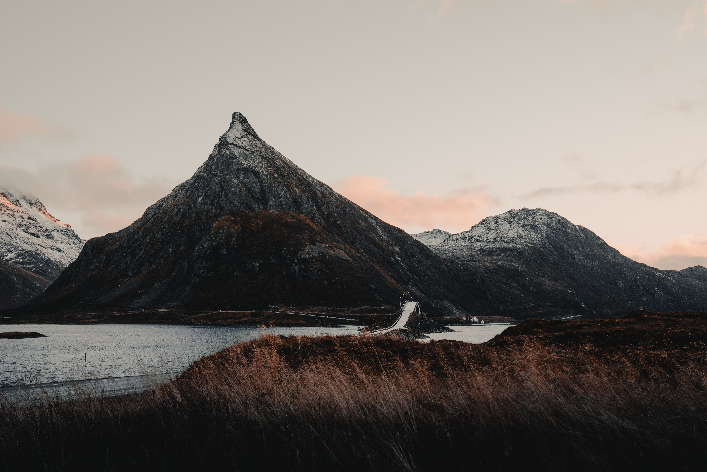

Lofoten
Lofoten is an archipelago and a traditional district in the county of Nordland, Norway. Lofoten is known for a distinctive
scenery with dramatic mountains and peaks, open sea and sheltered bays, beaches and untouched lands.
Its largest town, Leknes, lies approximately 169 km inside the Arctic Circle, or approximately 2,420 km away from
the North Pole, thus making Lofoten one of the world's northernmost populated regions. Though lying within the Arctic
Circle, the archipelago experiences one of the world's largest elevated temperature anomalies relative to its high latitude.
Lofoten is known for excellent fishing, nature attractions such as the northern lights and the midnight sun, and small
villages off the beaten track. Kayak between the islands, go fishing for the catch of your life, or look for sea eagles
soaring in the sky.
Lofoten is in the process of being certified as a Sustainable Destination, a seal of
approval given to destinations that work systematically to reduce the negative impact of tourism. In addition to providing
visitors with enjoyable experiences, Lofoten wishes to preserve the local nature, culture and environment, strengthen social
values, and be economically viable. The municipality and the travel industry cooperate closely to assure that the destination
is a great place both to live in and to visit.

 
